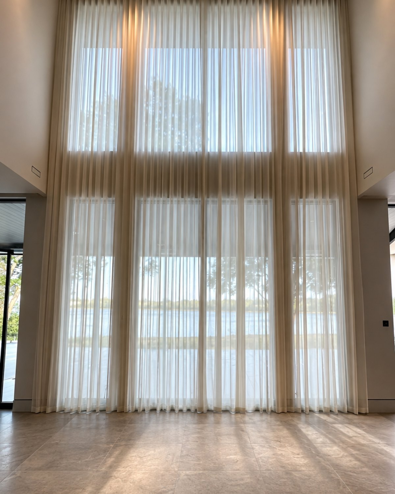

Rideaux ou draperies : y a-t-il une différence ?
En gros : les rideaux sont plus légers, souvent sans doublure ; les draperies sont plus lourdes, doublées, plus habillées. En pratique, nous faisons les deux sur mesure et le choix tient surtout au poids du tissu, à la doublure et à la fonction. Beaucoup de pièces combinent un voile pour le jour et une draperie doublée par-dessus pour le soir — le look superposé qu’on voit dans les maisons bien conçues.
Les décisions qui comptent
1. Tissu et opacité
- Voile — lumière douce, intimité le jour, effet aérien.
- Lin et effet lin — décontracté, texturé, très actuel.
- Velours et tissages lourds — luxe, chaleur, absorption du son.
- Doublure occultante — chambres et salles de cinéma.
2. La doublure
La doublure, c’est ce qui sépare un rideau qui a l’air bien d’un rideau qui a l’air cher. Elle donne du corps pour que le tissu tombe en plis nets, protège le tissu de face de la décoloration au soleil et — avec une doublure thermique ou occultante — ajoute isolation et noirceur.

3. L’ampleur
L’ampleur, c’est la quantité de tissu par rapport à la largeur de la fenêtre. Les rideaux trop justes sont l’erreur la plus fréquente. Nous utilisons environ 2 à 2,5 fois la largeur du rail pour que les rideaux paraissent généreux, ouverts comme fermés.
4. Le style de tête (plis)
Vague / pli S — ondulations douces et régulières ; le favori moderne sur rail. Pli pincé — ajusté, classique. Œillets — décontracté, sur tringle. Pli crayon — traditionnel et économique.

5. Rail ou tringle, et hauteur de pose
Un rail fixé au plafond donne le look le plus propre et le plus haut, et glisse en silence — notre recommandation habituelle. Posez haut et large : accrocher les rideaux juste au-dessus du cadre et les prolonger de chaque côté agrandit visuellement la fenêtre et la pièce.
6. La tombée (longueur)
Effleurer le plancher (environ 1 cm au-dessus) pour une finition nette et ajustée. Casser (2 à 3 cm sur le plancher) pour un look détendu et luxueux. Traîner pour le drame complet. Jamais à mi-mur. C’est pour obtenir cette précision que nous mesurons chaque fenêtre nous-mêmes.
Avantages et inconvénients, honnêtement
Avantages
- Douceur, chaleur et drame inégalés — transforme l’atmosphère d’une pièce.
- Fait paraître les plafonds plus hauts et les fenêtres plus grandes quand on pose haut et large.
- Excellente isolation et absorption du son avec doublure.
- Choix infini de tissus, couleurs et motifs.
- Se superpose à merveille avec des voiles ou des stores.
- Rails motorisés offerts.
Inconvénients
- Prend de la place au mur une fois ouvert (l’empilement) — à prévoir.
- Pas idéal près de l’eau ou de la cuisson — les cuisines et salles de bain conviennent mieux aux stores.
- Prend la poussière et demande un nettoyage périodique ; vérifiez l’entretien du tissu.
- Coûte plus qu’un store enrouleur de base à cause de la quantité de tissu et de la doublure.
- Les détails ne pardonnent pas — les mauvaises mesures se voient. (Nous mesurons pour vous.)
En un coup d’œil
| Isolation | Très bonne avec doublure |
|---|---|
| Contrôle de la lumière | Du voile à l’occultant total |
| Intimité | Excellente une fois fermés |
| Style | L’option affirmée |
| Entretien | Nettoyage périodique |
| Pièces idéales | Salons, chambres, salles à manger, fenêtres hautes |
| Options | Voile / lin / velours / occultant · doublé · vague / pincé / œillets · rail ou tringle · motorisé |
Pour qui c’est parfait
Si vous voulez que la pièce paraisse chaleureuse, finie et un brin luxueuse, la réponse, ce sont les rideaux. C’est notre première recommandation pour les salons et les chambres, pour les fenêtres hautes ou vedettes, et pour quiconque trouve les stores rigides un peu cliniques. Superposez un voile sous une draperie doublée et vous obtenez une lumière douce le jour et une intimité douillette le soir.
Notre combinaison la plus demandée — et exactement ce que montre la photo en haut de cette page : un rideau voile à vague sur rail au plafond pour la lumière du jour, avec une draperie occultante doublée devant pour le soir. Ou un store alvéolaire derrière pour l’isolation. Le meilleur des deux, et ça photographie superbement.
Quand choisir autre chose
- Cuisine, salle de bain ou fenêtre juste à côté de l’évier ? Un store enrouleur lavable.
- Peu d’espace au mur, ou envie d’un pli ajusté plutôt qu’une tombée ? Stores bateau.
- Besoin d’isolation sans le volume de tissu ? Stores alvéolaires.
Questions fréquentes
À quelle hauteur poser les rideaux ?
Le plus haut possible — idéalement au plafond ou juste en dessous, et en dépassant de 15 à 25 cm de chaque côté de la fenêtre. Ça agrandit visuellement la fenêtre et la pièce.
Les rideaux doivent-ils toucher le plancher ?
Oui, ou presque. « Effleurez » le plancher (environ 1 cm au-dessus) pour un look ajusté, ou « cassez » de 2 à 3 cm dessus pour un rendu détendu et luxueux. Des rideaux qui s’arrêtent à mi-mur ont l’air inachevés.
Qu’est-ce que l’ampleur ?
Le rapport entre la largeur du tissu et celle du rail. Nous utilisons environ 2 à 2,5 fois pour que les rideaux paraissent généreux. Les rideaux trop justes sont l’erreur numéro un.
Les rideaux isolent-ils bien ?
Les rideaux doublés — surtout avec doublure thermique ou occultante — isolent très bien et absorbent aussi le son. Pour la meilleure isolation, combinez-les avec un store alvéolaire.
Est-ce que vous les fabriquez et les installez ?
Oui — chaque rideau est fait sur mesure pour votre fenêtre et installé gratuitement partout à Montréal, rails compris.